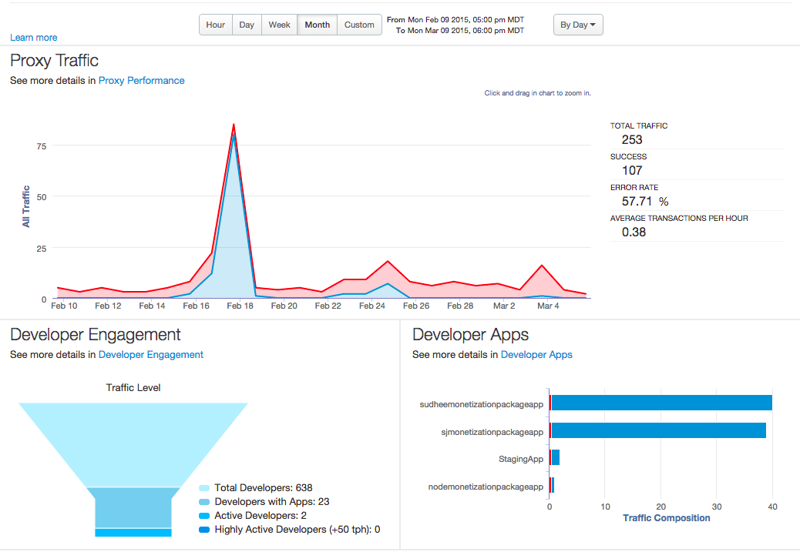

Edge Microgateway v. 2.4.x
This topic is a general introduction to Edge Microgateway intended for all audiences.
Apigee Edge Microgateway is a secure, HTTP-based message processor for APIs. Its main job is to process requests and responses to and from backend services securely while asynchronously pushing valuable API execution data to Apigee Edge where it is consumed by the Edge Analytics system. Edge Microgateway is easy to install and deploy -- you can have an instance up and running within minutes.
Typically, Edge Microgateway is installed within a trusted network in close proximity to backend target services. It provides enterprise-grade security, and some key plugin features such as spike arrest, quota, and analytics, but not the full capabilities or footprint of Apigee Edge. You can install Edge Microgateway in the same data center or even on the same machine as your backend services if you wish.
Typical use cases for a hybrid Cloud API management solution such as Edge Microgateway include:
Reduce latency of API traffic for services that run in close proximity. For example, if your API consumers and producers are in close proximity, you do not necessarily want APIs to go through a central gateway.
This section describes how Edge Microgateway works, its basic architecture, configuration, and deployment.
A good way to become familiar with Edge Microgateway is to set it up and run it. See the http://docs.apigee.com/node/37651 for all the steps and practical illustrations of many of the concepts discussed in this section.
Moving the API management component close to backend target applications can reduce network latency. While you can install Apigee Edge on-premises in a private cloud, a full deployment of Apigee Edge is necessarily large and complex to support its full feature-set and data-heavy features like key management, monetization, and analytics. This means that deploying Apigee Edge on premises in each data-center is not always desirable.
With Edge Microgateway, you get a relatively small footprint application running close to your backend applications. And, you get to leverage full Apigee Edge for analytics, security, and other features.
This section illustrates several possible deployment scenarios for Edge Microgateway.
Same machine
Figure 1 shows the request processing path when Edge Microgateway is deployed in its most simple possible configuration, where Edge Microgateway and the backend target APIs are installed on the same machine. A single Edge Microgateway instance can be used to front multiple backend target applications
Figure 1: The most simple deployment of Edge Microgateway
Different machine
Because all the communication between clients, Edge Microgateway, and backend API implementations is HTTP, you can install Apigee Edge Microgateway on a different machine from the API implementation, as shown in Figure 2.
Figure 2: Edge Microgateway separated from backend target APIs
With load balancer
Edge Microgateway itself can be front-ended by a standard reverse proxy or load-balancer for SSL termination and/or load-balancing, as shown in Figure 3.
Figure 3: Running Edge Microgateway with a load balancer
Intranet deployment
Use Edge Microgateway to protect intranet traffic while protecting internet traffic with Apigee Edge, as illustrated in Figure 4. Let's say an API endpoint /orders is proxied through Apigee Edge Cloud, and it hits the backend target https://mycompany.com/orders. This is represented by the target API implementation on the left. This API may then call multiple API endpoints represented by the target implementation on the right. For example, it may call internally /customers and /transactions. See also this post on the Apigee Community.
Figure 4: Running Edge Microgateway to protect intranet traffic
Edge Microgateway depends on and interacts with Apigee Edge. Edge Microgateway must communicate with Apigee Edge to function. The primary ways that Edge Microgateway interacts with Edge are:
You must initially configure Edge Microgateway to be able to communicate with your Apigee Edge organization. On startup, Edge Microgateway initiates a bootstrapping operation with Apigee Edge. Edge Microgateway retrieves from Apigee Edge the information it requires to process API calls on its own, including the list of Edge Microgateway-aware proxies that are deployed on Apigee Edge. We'll talk more about these proxies shortly.
Edge Microgateway does not have to be co-located with Apigee Edge; Apigee Edge public and private cloud offerings work equally well.
If you want to learn by doing, jump to http://docs.apigee.com/node/37651, which walks through the process of setting up and configuring Edge Microgateway using a convenient CLI command.
Edge Microgateway-aware proxies provide Edge Microgateway with certain information that allows it to process client API requests. Information about these proxies is downloaded from Apigee Edge to Edge Microgateway when Edge Microgateway starts up.
It is up to you or your API team to create these proxies on Apigee Edge using the Apigee Edge management UI or through other means if you wish. It's easy to do, and we walk through the details in the http://docs.apigee.com/node/37651.
Edge Microgateway-aware proxies must point to an HTTP target endpoint. In other words, the TargetEndpoint for the proxy must include an HTTPTargetConnection. Edge Microgateway is not designed to work with proxies that use the ScriptTarget element to point to Node.js applications as backend targets. See also http://docs.apigee.com/node/6858 and Specify the Node.js target with ScriptTarget.
The characteristics of Edge Microgateway-aware proxies include:
edgemicro_. For example: edgemicro_weather.As API traffic flows through Edge Microgateway, Edge Microgateway buffers and asynchronously sends API execution data to Apigee Edge, where the data is stored and processed by the Edge Analytics system. This asynchronous communication allows Edge Microgateway to take advantage of Edge analytics features, while maintaining a relatively small footprint with minimal processing overhead or blocking. The full suite of Edge Analytics dashboards and custom reporting capabilities are available to you and your team to analyze traffic that passes through Edge Microgateway.
Figure 6: Proxy Traffic dashboard on Edge

For more information about Edge Analytics, see http://docs.apigee.com/node/15656.
Role of Apigee Edge
As mentioned previously, Apigee Edge plays a role in securing all client requests to Edge Microgateway. The primary roles Apigee Edge plays are:
Client app authentication
Edge Microgateway cannot be used to invoke regular Apigee Edge API proxies, as explained in detail in the discussion of creating microgateway-aware proxies. The OAuth2 access tokens that you obtain and use with Edge Microgateway are not the same as the access tokens issued by Edge and enforced by Edge through its native OAuthV2 policy. To use OAuth2 with Edge Microgateway you must follow the specific instructions provided in the topic Secure API calls with an OAuth2 access token.
Edge Microgateway does not invoke regular Edge API proxies. An access token generated for Edge Microgateway cannot be used to invoke Edge proxies protected by the OAuthV2 policy. Conversely, access token granted to access Edge proxies cannot be used to access APIs called through Edge Microgateway. To use OAuth2 with Edge Microgateway you must follow the specific instructions provided in the topic Secure API calls with an OAuth2 access token.
Authentication of Edge Microgateway on Apigee Edge
API product management platform
You cannot migrate existing proxies with associated policies or conditional flows to Edge Microgateway. Edge Microgateway requires you to create new "microgateway-aware" proxies. These proxies must be named with a special prefix, edgemicro_. Upon startup, Edge Microgateway discovers these edgemicro_* proxies and downloads configuration information for each of them. This information includes their target URLs and resource paths. From that point on, the proxies are not used. Any policies or conditional flows in these proxies will never execute.
Another reason for having microgateway-aware proxies is that Edge Microgateway asynchronously pushes analytics data to Edge for each microgateway-aware proxy. You can then view the analytics data for microgateway-aware proxies just as you would for any other proxy in the Edge Analytics UI.
The setup topic walks you through all the steps you need to do to begin proxying API calls through Edge Microgateway, including a few simple steps you need to do on Apigee Edge to set up a configuration that Edge Microgateway needs, including creation of microgateway-aware proxies. See http://docs.apigee.com/node/37651.
As explained in the previous section, you cannot attach policies to "microgateway-aware" proxies in Apigee Edge. Edge Microgateway uses plugins to provide functionality similar to policies in Edge, such as quota, spike arrest, API key security, and OAuth2 security. See http://docs.apigee.com/node/37651. You can also write custom plugins, as explained in http://docs.apigee.com/node/37671.
Apigee provides these resources:
Edge Microgateway Documentation - The docs include a getting started tutorial as well as complete reference and configuration information.
Deep-dive webinar - Discusses Edge Microgateway in detail and demonstrates how to setup and configure Edge Microgateway.
Edge Micro forum - The Edge Micro forum on the Apigee Community is a great place to ask questions and benefit from questions asked, and answered, by others.